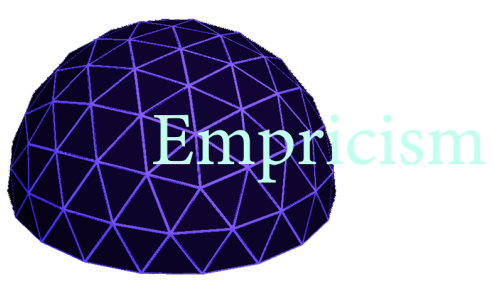
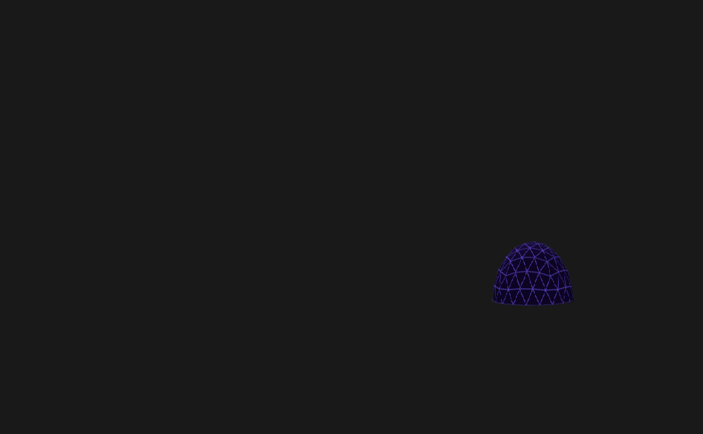

{% load static %}

<!DOCTYPE html>
<html>
  <head>
    <meta charset="utf-8">
    <title>Empiricism</title>
    <script src="https://aframe.io/releases/0.8.2/aframe.min.js"></script>
    <script src="https://npmcdn.com/aframe-event-set-component@3.0.1"></script>
  </head>

  <body>
    <a-scene>
      <a-asset>
        
        
        
      </a-asset>
      
      <a-sky radius="10" src="#skyTexture"></a-sky>

      <a-image src="#logoTexture" position="0 4 -3" width="4" height="3"></a-image>
      
      <a-link class="link" href="{% url 'game' %}" title="Start" image="#linkTexture" position="0 0.5 -3">
      </a-link>
    
      <a-camera universal-controls>
        <a-cursor 
          intersection-spawn="event: click"
          animation__click="property: scale; startEvents: click; from: 0.1 0.1 0.1; to: 1 1 1; dur: 150"
          animation__fusing="property: fusing; startEvents: fusing; from: 1 1 1; to: 0.1 0.1 0.1; dur: 1500"
          event-set__1="_event: mouseenter; color: springgreen"
          event-set__2="_event: mouseleave; color: black"
          raycaster="objects: .link">
        </a-cursor>
      </a-camera>
    
    </a-scene>

  </body>
</html>